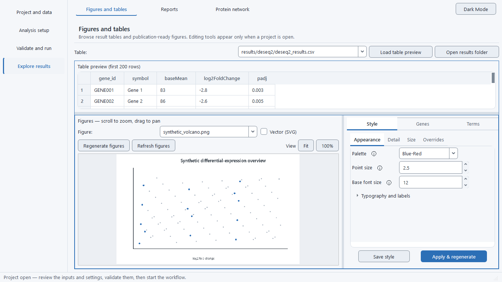

BulkSeq Studio: Outputs and provenance
What you get
Outputs
A finished run leaves a project folder of result tables, publication figures, a quality report, enrichment and network files, and a record of exactly how it was produced. The Explore results stage separates Figures and tables, Reports, and Protein network; every file is a plain CSV, PNG, SVG, HTML, text, or standard network format you can open or share.
Result tables
The differential-expression results come out as tab-friendly text files you can open in Excel or R:
- DESeq2 / limma results table — every gene with its log2 fold-change, p-value, adjusted p-value, gene symbol, and biotype.
- Up- and down-regulated gene lists — the significant genes split by direction, using your
alphaand|log2FC|thresholds. - Normalized expression matrix — DESeq2 normalized counts (or log2 intensities for microarray) as a gene-by-sample CSV.
- Unchanged / equivalence list — genes flagged as genuinely unchanged by the TOST equivalence test, separate from "not significant".
- Preranked
.rnk— locally fitted models use their signed test statistic; imported-results projects use the confirmedlog2FoldChangebecause an upstream statistic may use an undocumented scale.
Figures
Each figure is written in two forms: a raster PNG for documents and slides, and a vector SVG that stays crisp at any zoom (toggle Vector (SVG) in the viewer to preview it). The Figure Style editor restyles and regenerates them without re-running alignment or DESeq2.
- Volcano and MA plots. The volcano y-axis scale has three modes in the Figure Style editor: cap the tail (default) squishes hyper-significant genes to a cap line marked with off-scale hollow triangles so the bulk of the plot stays readable; show all at full height plots every gene at its true −log10(adjusted p) so a marginal gene with an extreme p-value is visible; and compress (sqrt) uses a square-root axis to shrink the tall tail while keeping all data. The y-cap value applies only in cap mode.
- PCA and sample-distance plots.
- Top-DEG and genes-of-interest heatmaps. The Figure Style per-sample label toggle now hides the sample-name columns on the top-DEG, up/down split, genes-of-interest, and GSVA heatmaps as well as PCA, sample-distance, and correlation — the condition colour bar stays, so groups remain distinguishable. This declutters many-replicate and microarray studies.
- Enrichment dotplots (GO and KEGG), GSEA running-score and ridgeplots, gene-concept and term-similarity networks.
- An optional GSVA pathway-activity heatmap from your own gene sets.
- A raw p-value histogram and, for RNA-seq, dispersion / Cook's-distance / library-size diagnostics.

Quality report
The MultiQC report gathers FastQC, trimming, alignment, and (when enabled) FastQ Screen contamination and RSeQC read-distribution / gene-body-coverage statistics for every sample into one HTML page. Open it from the Open MultiQC Report button on the Run Monitor.
Self-contained HTML report (Read-Along)
Every run also writes a single-file results_report.html, built as a dual-track Read-Along report that serves a non-specialist and a bioinformatician from the same document. Each section opens with a plain-language key finding — what was compared, how many genes changed and in which direction, and the strongest genes — with the statistics glossed inline and collected in an end glossary, above the full sortable tables with their exact numbers. The overview is a compact row of headline stat chips plus the run cards; the figures are grouped and lettered (Quality, Differential expression, Function), each with a plain caption and a technical caption, and the click-to-open, zoomable figure gallery is preserved. Everything is embedded with no external assets, so you can email it, drop it in a shared folder, or archive it and it still renders on its own — a way to hand the result to a collaborator without shipping the whole project folder. It also prints and saves to PDF cleanly — every collapsible section opens, wide tables wrap instead of clipping, and the figures and direction colours are kept — for a lab notebook or a manuscript supplement, and the sortable tables and the figure viewer are operable by keyboard and screen reader.
Cross-study meta-analysis report
A multi-study meta-analysis run (a dataset column with more than one study, with Multi-study meta-analysis ticked) writes a second self-contained report, meta_analysis_report.html, alongside the standard one. It opens with a convergence/divergence summary — how many genes agree in direction across the studies, how many are flagged discordant, and the direction-concordance rate — above the comparative figures and the convergent-gene table. The supporting tables land in results/meta/:
meta_convergent_genes.csv— the convergent meta-DEGs (significant combined FDR and consistent in direction across every study), with the pooled effect and per-study fold changes.meta_study_summary.csv— a per-study differential-expression summary, so each study's contribution is visible.meta_enrichment_ora.csv— the cross-study over-representation result comparing shared against study-specific biology.
The comparative figures are written to results/figures/ with the rest: a meta-volcano (pooled effect versus combined FDR, coloured by cross-study direction), per-gene forest plots of the top convergent genes, a cross-study log2FC concordance scatter with its rank correlation, a convergent-gene heatmap of per-study fold changes, a between-study heterogeneity plot, a combined p-value histogram, an integration-gain plot, and a cross-study enrichment dotplot. They restyle with the Figure Style editor and Regenerate figures like the other figures.
Per-study meta-analysis outputs
A multi-study meta-analysis run also writes a single-study breakdown for every study it includes, under results/meta/per_study/<STUDY>/:
- figures/ — volcano, MA plot, p-value histogram, PCA, and a top-DEG heatmap, each as PNG and SVG.
- tables/ —
de_results.csv,upregulated.csv,downregulated.csv, andsummary.csv. - index.html — a self-contained page linking that study's own figures and tables.
A top-level manifest.json lists every study with its tested/up/down gene counts. Because each study gets its own figures, a duplicate or re-deposited dataset stands out immediately — its volcano, PCA, and heatmap will visibly match another study's rather than showing independent biology. An opt-in per-study enrichment toggle additionally runs GO over-representation analysis on each study's up/down gene lists, recorded in an enrichment_manifest.json; it is off by default because it repeats a clusterProfiler run once per study.
Enrichment tables and networks
- Enrichment tables — the GO, KEGG, and custom gene-set over-representation and GSEA results as CSV, run separately on the up- and down-regulated sets.
- STRING network files — the protein-interaction network exported as GraphML, SIF, and cytoscape.js JSON (cyjs) for editing in Cytoscape.
- Protein network page — the same network rendered live in the app with pointer and keyboard node navigation (see below).
Genes of interest
Supply a gene list and the app generates a focused z-scored heatmap, a per-condition expression panel, and a counts table from the existing run, plus a STRING network for those genes when PPI seeding is set to the list. No re-analysis is needed. Two more outputs come from the same slice: goi_deseq2_results.csv, the full DESeq2 statistics (fold change, p-value, adjusted p-value, base mean) filtered down to just the listed genes; and goi_log2fc, a per-gene log2 fold-change plot with its 95% confidence interval, coloured by direction.
Enrichment term genes
The Enrichment Terms view turns any enriched GO term or KEGG pathway into concrete genes. Pick a term and its member genes appear in a sortable table with their full differential-expression statistics — instantly, from the finished run. A second button builds a focused z-scored heatmap and per-condition expression panel when an expression matrix exists, with no re-alignment or re-analysis. Terms are resolved across routes (GO symbols and KEGG NCBI gene IDs); a g:Profiler run records no per-term gene lists, and an imported-results project has no expression matrix, so in those cases only the applicable table is offered.
Run provenance
When a run finishes, Run monitor lets you save two route-aware records of how it was produced:
- Tools & references — only the tools and packages active for the route, the operating system and architecture, recorded R/BLAS/LAPACK details, the reference and databases for locally fitted runs, or the source basename, import time, project-copy SHA-256 and schema, confirmed direction, and supplied upstream-method metadata for imported results.
- Study design — the configured sample sheet, samples, conditions, layout, design formula, and contrasts for a locally fitted run; imported-results projects instead state that no local model was fit and reproduce the source-direction record.
sessionInfo.